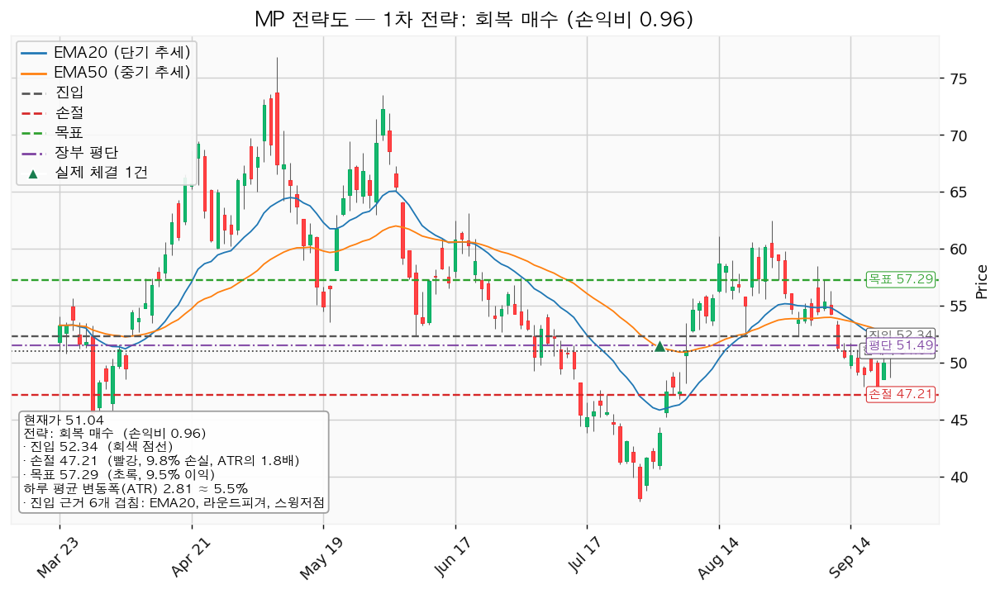
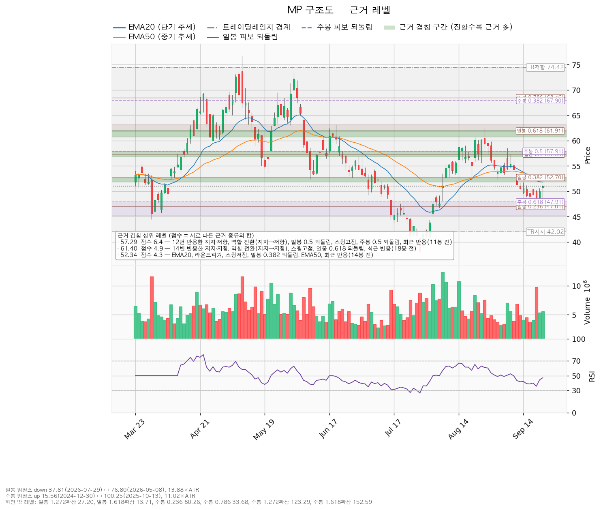
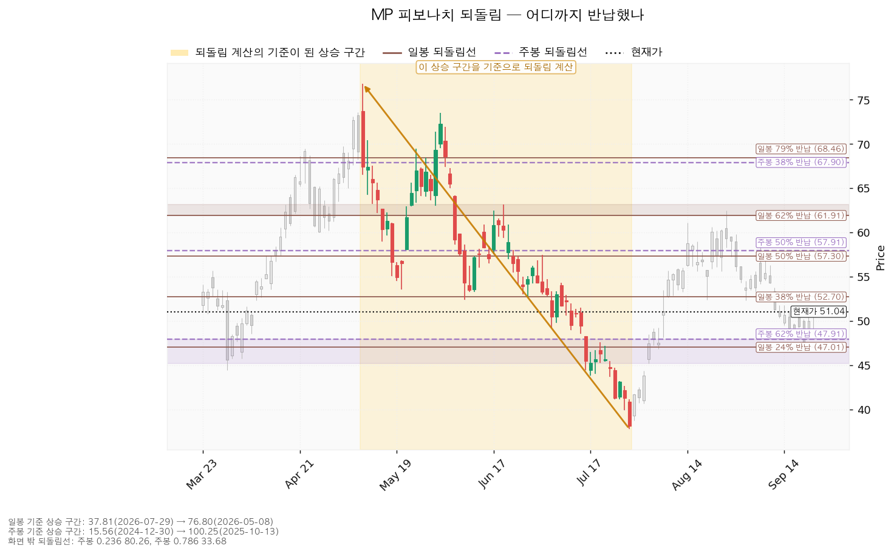
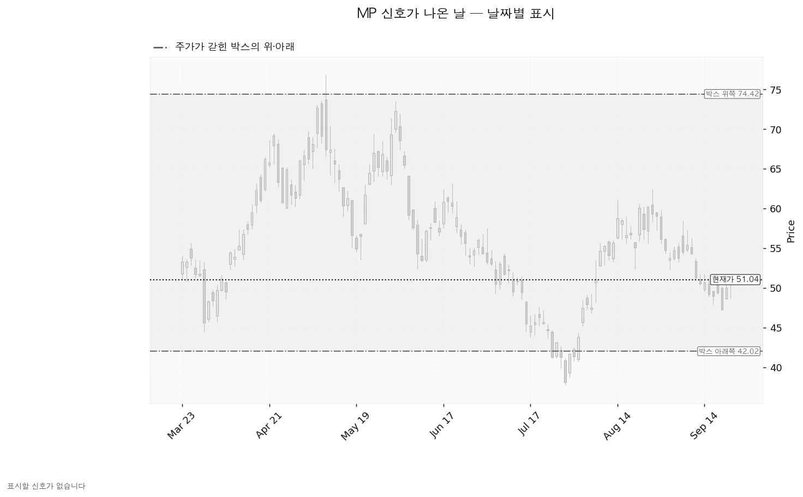

MP 머티리얼즈(MP)는 미국 캘리포니아 마운틴패스 광산에서 희토류를 채굴·정제하고, 텍사스 포트워스에서 희토류 영구자석을 생산하는 기업입니다.
기준 가격은 9월 22일 종가 51.04달러, 하루 평균 변동폭(ATR)은 2.81달러(주가의 5.50%)입니다. 미국 시장 국면은 신규 진입이 가능한 쪽입니다 — S&P 500 7,765가 200일 이동평균 7,192 위에 있습니다(+7.96%). 보유분은 8월 3일 체결된 8주, 평단 51.4925달러이고 현재 -3.62달러(-0.88%)입니다.
| 구분 | 가격 | 판정 방식 | 현재가 대비 | 상태 |
|---|---|---|---|---|
| 회복선(재분석 기준) | 52.34달러 | 일봉 종가로 회복한 뒤 되돌림에서 지지되는지 | +2.55% (0.46배) | 대기 — 닿으면 매수가 아니라 재계산 |
| 집행 손절 | 47.21달러 | 도달 시 즉시 청산 — 보유 8주에 적용됩니다 | -7.50% (1.36배) | 유효 |
| 관망 종료 기준 | 47.91달러 | 일봉 종가가 아래로 마감 / 또는 2026-11-06 실적 | -6.13% (1.11배) | 유효 — 신규 매수 계획 종료, 보유분 유지 |
| 확인선 | 57.29달러 | 일봉 종가 돌파 후 되돌림에서 지지 확인 | +12.25% (2.23배) | 미돌파 |
| 폐기선(구조) | 42.02달러 | 이탈 후 3거래일 내 종가 회복 실패(또는 그 전에 39.21달러 아래 종가 마감) + 반등에서 저항으로 확인 | -17.67% (3.21배) | 유지 중 |
아홉 항목을 모두 쟀고 통과는 둘입니다. 폐기선 42.02달러는 현재가에서 하루 평균 변동폭의 3.21배 아래로, 3배를 넘어 실무상 무효화 기준으로 작동하지 않습니다(대안은 아래 무효화 절에 적습니다). 확인선 57.29달러는 대표 셋업의 목표와 같은 가격이며 두 갈래로 씁니다 — 막히고 되밀리면 그 자리가 청산이고, 일봉 종가로 넘어서면 새 셋업으로 다시 잡습니다. 박스 상단 74.42달러는 그 위의 맥락으로만 적습니다.
① 직전 트리거의 성적표 — 직전이 건 회복선 47.96달러는 충족됐습니다. 9월 21일 종가 50.00달러로 위에 마감했고, 그 뒤 목표 57.29달러와 집행 손절 43.79달러 중 어느 쪽에도 닿지 않아 진행 중입니다. 관망 종료 46.00달러와 폐기선 42.02달러는 건드리지 않았습니다.
② 좌표의 이동 — 회복선 47.96 → 52.34달러, 집행 손절 43.79 → 47.21달러, 관망 종료 46.00 → 47.91달러로 모두 올라갔고 확인선 57.29달러와 폐기선 42.02달러는 같습니다. 올라간 이유는 가격이 47.26 → 51.04달러(+8.00%)로 오르면서 진입 자리가 주봉 0.618 되돌림(47.91달러)에서 EMA20·EMA50·라운드피겨 50·스윙저점 세 개가 겹친 51.81~52.71달러 구간으로 바뀌었기 때문입니다. 진입 근거 겹침은 2.1점에서 4.3점으로 두꺼워졌습니다.
③ 판단이 바뀌었습니다 — 직전은 손익비 1:2.24로 "회복하면 진입"이었고 이번은 1:0.96으로 패스입니다. 진입선이 4.38달러 올라가는 동안 목표는 57.29달러로 그대로여서 위로 남은 폭이 9.33달러에서 4.95달러로 줄었고, 손절 폭은 4.17달러에서 5.13달러로 넓어졌습니다. 보유 8주의 청산 가격도 바꿉니다 — 직전은 폐기선 42.02달러로 판정했으나 그 값이 실무상 작동하지 않는 거리인 데다 청산 가격은 하나여야 하므로, 이번부터 47.21달러 하나로 통일합니다.
산출된 셋업은 하나뿐이고 손익비 미달로 집행하지 않습니다.
| 항목 | 내용 |
|---|---|
| 셋업 | reclaim_long (저항 회복 매수) — 패스 |
| 구조 증명도 | 회복 확인형 (증명도 1.0 — 저항을 종가로 되찾은 뒤에만 진입하므로 진입가는 불리하나 구조가 먼저 증명됩니다) |
| 진입 | 52.34달러 (일봉 종가 회복 확인 후) |
| 진입 근거 겹침 | 4.3점 / 6개 — EMA20, 라운드피겨, 스윙저점, 일봉 0.382 되돌림, EMA50, 최근 반응(14봉 전). 겹침 띠는 51.81~52.71달러 |
| 손절 | 47.21달러 — 근거 겹침 구간(47.91~48.00달러, 2.1점) 바로 아래 |
| 목표 | 57.29달러 — 겹침 6.4점 / 6개: 12번 반응한 지지·저항, 역할 전환(지지→저항), 일봉 0.5 되돌림, 스윙고점, 주봉 0.5 되돌림, 최근 반응(11봉 전) |
| 손익비 | 1:0.96 (손절 폭 5.13달러 = 1.83 ATR = 진입가의 9.81%) — 손절이 이미 구조 아래에 놓인 값이라 구조적 손절 기준 손익비가 따로 산출되지 않았고, 1:0.96이 그 값입니다 |
| 엣지의 종류 | 모멘텀 — "저항을 종가로 되찾으면 그 방향이 이어진다"는 전제 |
| 유형의 성격 | 자주 틀리고 소수가 크게 맞는 유형입니다(이 유형의 일반적 성격이며 이번 분석에서 측정한 값이 아니므로 승률 수치를 붙이지 않습니다) |
| 청산 | 목표 57.29달러에서 전량. 트레일링 없음 |
대표로 고른 이유: 손익비 0.96 × 구조 증명도(회복 확인형) × 근거 겹침 4.3점으로 선정했습니다. 다른 셋업이 산출되지 않아 손익비 1등과 대표가 갈리는 트레이드오프는 없었습니다. 순위에는 상대강도·거래량 배수 0.90배가 곱해졌고(지수 대비 20일 초과수익 -12.57%, 상대강도선 20일 기울기 -12.39%, 돌파 구간 거래량 최대 1.92배), 셋업이 하나뿐이라 순서는 바뀌지 않았습니다. 손절 47.21달러는 겹침 구간 안이 아니라 그 구간(47.91~48.00달러) 아래로 밀어낸 값입니다 — 구간 안쪽에 두면 손절 폭이 좁아져 손익비가 좋아 보이지만 지지가 살아 있는 자리에서 잘려 나갑니다. 손익비 0.96은 그렇게 넓힌 손절 기준의 값입니다.
분할하지 않는 이유: T1 53.83달러에서 절반 익절하고 잔여 손절을 진입가 52.34달러로 올리는 안도 계산됐습니다. 그 경우 T1 구간 손익비가 1:0.29, 전 구간 합산이 1:0.62, 본전 손절로 끝날 때의 하한이 1:0.14로 더 낮아집니다. 진입 52.34달러에서 목표 57.29달러까지가 1.76 ATR로 2배에 못 미치므로 트레일링·다단 청산도 권하지 않습니다(이 2배는 관행적 기준이며 정설은 아닙니다). 진입 근거는 저항 회복 모멘텀인데 집행은 레인지 규칙(저항에서 전량 청산)을 따르는 조합이고, 이 조합에서 손익비가 1을 밑돌면 남는 것이 없으므로 패스로 끝냅니다.
현재가 추격은 권하지 않습니다. 51.04달러는 52.34달러 종가 회복이 확인되기 전의 자리입니다. 아래로 되돌린다면 엔진이 잡은 대기 후보는 47.96달러(겹침 2.1점 — 주봉 0.618 되돌림, 라운드피겨)입니다. 이동평균은 현재가 51.04달러가 5거래일 유지될 경우 EMA20이 51.81→51.50달러, EMA50이 52.71→52.41달러로 내려옵니다. 이 투영치는 가격 예측이 아니라 "현재가가 유지되면 평균선이 어디로 내려오는가"를 계산한 값입니다. 계획 진입가 52.34달러는 장부 평단 51.4925달러보다 위이므로, 집행했다면 평단을 낮추는 매수가 아니라 추가 매수였을 자리입니다.

집행 손절 47.21달러는 아래 판정과 무관하게 별도로 작동합니다. 장중 일시 이탈은 어느 단계에도 해당하지 않습니다.
| 단계 | 트리거 | 의미 | 행동 |
|---|---|---|---|
| ① 관찰 | 일봉 종가가 52.34달러 아래로 마감 | 구조 이탈 시작 — 되돌아 올라오면 속임수 하락(spring)일 수 있어 아직 무효가 아닙니다 | 신규 진입만 중단. 집행 손절은 그대로 둡니다 |
| ② 경고 | 이탈 후 3거래일 안에 52.34달러를 종가로 회복하지 못함, 또는 그 전에 일봉 종가가 49.53달러 아래로 마감(하루 평균 변동폭의 1배만큼 더 밀림) — 둘 중 먼저 오는 쪽 | 저항 회복 실패 가능성이 우세해집니다 | 잔여 비중 축소. 반등이 나오면 이 가격에서의 반응을 확인합니다 |
| ③ 무효 | 반등이 52.34달러에서 막히고 그 아래로 되밀림(지지가 저항으로 전환) | 셋업 폐기 — 구조 해석이 틀린 것으로 확정 | 포지션 정리. 새 구조가 만들어질 때까지 관망 |
논지 무효화 — 폐기선 42.02달러는 하루 평균 변동폭의 3.21배 아래여서 이 리포트의 무효화 기준으로 쓸 수 없습니다. 가격 대신 11월 6일 실적에서 아래 중 하나가 나오면 이 종목을 회복 후보에서 뺍니다. ⓐ 내년 추정이익 하향이 최근 30일의 -0.5%에서 다시 두 자릿수로 벌어지는 경우 — 90일 -20.5%의 하향이 멈춘 것이 아니라 쉰 것이 됩니다. ⓑ 영업현금흐름 적자가 -155,755,000달러(2025년 12월 결산)보다 커지는 경우 — 설비투자가 줄어드는 중인데도 영업에서 현금이 더 나가면 회복 시점을 잡을 근거가 없습니다. ⓒ 애널리스트 최저 목표 57.00달러가 현재가 아래로 내려오는 경우 — 현재가가 17명 전원의 목표 아래라는 근거가 사라집니다.
① 상승 전환 — 조건은 52.34달러 종가 회복 후 지지 → 57.29달러 종가 돌파입니다. 구조로는 속임수 하락 확인 → 매수세가 드러나는 상승(강세 신호) → 눌렸을 때 지지 확인 → 상승 국면 순서입니다. 이번 리포트의 손익비가 1을 밑돌므로 52.34달러를 회복하면 매수가 아니라 새 리포트로 재계산합니다.
② 횡보 지속 — 조건은 42.02달러를 지키며 57.29달러 아래 박스를 유지하는 것입니다. 구조는 유지되며 매물 소화에 시간이 필요한 국면입니다(부정 신호가 아닙니다). 신규 진입은 보류하고 셋을 추적합니다 — 지지 테스트마다 매도 거래량이 줄어드는지(현재: 혼조), 저점이 절상되는지(현재: 절상), 상승할 때 거래량과 캔들 폭이 확대되는지(현재: 상승봉/하락봉 거래량비 1.01배). 저점 절상은 이미 충족돼 있으므로, 남은 둘 가운데 지지 테스트 거래량이 줄어드는 흐름으로 바뀌면 매집 쪽으로 판정이 기웁니다.
③ 시나리오 폐기 — 조건은 42.02달러 이탈 후 3거래일 내 회복 실패(또는 그 전에 39.21달러 아래 종가 마감) + 반등에서 저항으로 확인입니다. 그 경우 박스는 매집이 아니라 재분산이었던 것이고 추가 저점 갱신 가능성이 열립니다. 보유 8주는 그보다 위인 47.21달러에서 이미 정리되므로, 42.02달러는 이 종목을 회복 후보에서 빼는 기준으로 씁니다.
점수는 서로 다른 근거 종류의 가중치를 더한 값이며, 같은 종류가 여러 개 붙어도 한 번만 더해집니다.
| 가격대 | 점수 | 근거 | 현재가 대비 |
|---|---|---|---|
| 56.90~57.91달러 | 6.4 | 12번 반응한 지지·저항, 역할 전환(지지→저항), 일봉 0.5 되돌림, 스윙고점, 주봉 0.5 되돌림, 최근 반응(11봉 전) | +12.25% — 목표이자 확인선 |
| 60.71~61.99달러 | 4.9 | 14번 반응한 지지·저항, 역할 전환(지지→저항), 스윙고점, 일봉 0.618 되돌림, 최근 반응(18봉 전) | +20.30% |
| 51.81~52.71달러 | 4.3 | EMA20, 라운드피겨, 스윙저점, 일봉 0.382 되돌림, EMA50, 최근 반응(14봉 전) | +2.55% — 진입 |
| 53.57~54.00달러 | 3.5 | 스윙저점, 13번 반응한 지지·저항, 라운드피겨, 최근 반응(14봉 전) | +5.47% |
| 47.91~48.00달러 | 2.1 | 주봉 0.618 되돌림, 라운드피겨 | -6.13% — 관망 종료, 손절은 이 아래 |
| 42.02달러 | 1.2 | 박스 하단 지지 | -17.67% — 폐기선 |
박스는 751일치 일봉 중 180봉 창으로 판정했습니다(가격이 박스 안에 머문 비율 97.2%). 40봉 창은 55.0%로 유효 판정을 받지 못했고 90봉 창은 91.1%로 유효합니다. 180봉 박스 42.02~74.42달러의 폭은 하루 평균 변동폭의 11.53배여서 경계 두 개는 그날그날 볼 가격으로 쓰기에 멀고, 그래서 이 리포트의 판정선은 안쪽 겹침 구간에서 잡았습니다. 현재가 51.04달러는 박스 아래에서 27.8% 지점입니다. 직전 구간은 20.18~88.33달러의 추세·확장 구간이었고 지금 박스와 같은 가격대에서 겹칩니다 — 위에서 내려온 것도 아래에서 올라온 것도 아닌 같은 횡보의 연장입니다. 박스 안쪽 판정은 중립이고 근거로 잡힌 항목은 저점 절상(7/29 37.81 → 8/20 52.42 → 9/1 52.35달러) 하나뿐입니다. 지지 테스트 거래량은 3/30 평균의 2.09배 / 4/2 0.84배 / 7/29 1.67배 / 8/6 1.26배로 줄어드는 흐름이 아니고, 상승봉 대 하락봉 거래량비도 1.01배로 갈리지 않아 매집으로 읽을 근거가 부족합니다.

일봉 되돌림은 76.80달러(2026-05-08) → 37.81달러(2026-07-29) 하락 구간 기준으로 24% 47.01 / 38% 52.70 / 50% 57.31 / 62% 61.91달러입니다. 주봉은 15.56달러(2024-12-30) → 100.25달러(2025-10-13) 상승 구간 기준으로 50% 57.91 / 62% 47.91달러입니다. 현재가 51.04달러는 주봉 62% 되돌림 47.91달러 위로 올라섰고, 그 위 일봉 38% 되돌림 52.70달러가 진입 겹침 구간의 상단을 이룹니다. 목표 57.29달러는 일봉 50%(57.31달러)와 주봉 50%(57.91달러)가 같은 자리에서 만나는 지점이며, 이것이 목표 겹침 6.4점의 절반을 만듭니다.

이번 창에서 엔진이 인식한 신호일은 없습니다 — 속임수 하락(spring)·속임수 상승(upthrust)·강세 신호(SOS)·약세 신호(SOW) 어느 것도 잡히지 않았습니다. 박스는 유효 판정을 받았으므로 판정 보류가 아니라 표시할 만한 날이 없었다는 뜻입니다. 국면 후보는 하락 국면으로, 근거는 하락 추세·EMA 역배열·기울기가 아래라는 셋이고 박스 안쪽 성격은 중립입니다. 국면 후보는 확정된 판정이 아닙니다.

(a) 배수 — 후행 12개월 EPS가 -0.33달러 적자여서 후행 배수는 계산되지 않습니다. 선행 배수는 58.40배(내년 추정 EPS 0.87391달러 기준)이고, 올해 추정 EPS 0.02926달러에서 내년 0.87391달러로 성장률 2,887%가 붙습니다. 적자에서 막 벗어나는 구간이라 배수 하나로 비싸다·싸다를 판정할 수 있는 상태가 아닙니다.
(b) 목표주가 분포 — 애널리스트 17명, 평균 74.29달러, 최저 57.00달러, 최고 100.00달러이고 추천등급은 강력매수입니다. 현재가 51.04달러는 17명 전원의 목표 중 가장 낮은 57.00달러보다도 아래에 있습니다. 최저까지 +11.68%, 평균까지 +45.56%입니다.
(c) 하락의 성격 — 내년 추정 EPS는 90일 전 1.09971달러에서 0.87391달러로 -20.5%, 올해 추정은 0.24038달러에서 0.02926달러로 -87.8% 내려왔습니다. 추정치와 가격이 함께 내려왔으므로 배수 수축이 아니라 이익 전망 하향이 동반된 하락입니다. 최근 30일만 보면 내년 추정은 -0.5%로 하향이 거의 멈췄습니다(올해 추정의 30일 변화 -627.2%는 기준값 -0.00555달러가 0 부근이라 비율로 읽을 수 없는 값입니다). 하향이 멈춘 것과 추정치가 다시 오르는 것은 다르므로 11월 6일 실적에서 이 구분을 확인합니다.
(d) 현금흐름 — 2025년 12월 결산 기준 영업현금흐름 -155,755,000달러, 설비투자 172,375,000달러(전년 대비 -7.5%), 잉여현금흐름 -328,130,000달러입니다. 영업 단계에서 현금이 나가고 있습니다. 영업은 흑자인데 설비투자가 앞서서 생긴 적자와는 성격이 다르며, 투자 회수 속도를 따지기 전에 영업 자체가 현금을 만드는지를 먼저 확인해야 합니다. 설비투자는 전년보다 줄었으므로 투자 확대가 원인도 아닙니다.
(e) 상승 여력의 분해 — 평균 목표 74.29달러를 내년 추정 EPS 0.87391달러로 나누면 내재 배수가 85.0배입니다. 현재 선행 배수 58.40배에서 배수만 늘어나 만드는 값이며, 평균 목표까지의 +45.56%는 대부분 배수 확장으로 설명됩니다. 배수를 58.40배로 둔 채 74.29달러에 닿으려면 EPS가 1.27달러 이상이어야 하고, 이는 내년 추정 범위(하단 0.30 / 상단 1.76달러)의 위쪽입니다.
주도주 여부는 아닙니다. 미국 11개 섹터의 20일 초과수익 상위는 기술(+7.55%)과 커뮤니케이션(-0.38%)이고, 이 종목이 속한 소재는 -7.15%로 8위입니다. 섹터의 도움 없이 개별 종목의 구조에만 기대는 자리입니다. 컨센서스 목표는 12개월 기준이고 이 셋업은 수 주 기준이라 층위가 다릅니다 — 답은 진입 52.34 / 손절 47.21 / 목표 57.29달러이고, 손익비 미달로 패스입니다.
| 날짜 | 이벤트 | 볼 것 |
|---|---|---|
| 2026-11-06 | 분기 실적 발표 | 영업현금흐름이 -155,755,000달러에서 적자 폭을 줄였는지, 설비투자 172,375,000달러의 방향, 올해 EPS 컨센서스 0.02926달러 대비 실제치, 내년 0.87391달러 추정이 유지되는지 |
가격 트리거(52.34 / 47.91 / 47.21 / 42.02달러)와 별개로 날짜가 정해진 확인 지점은 11월 6일 하나입니다. 다음 실적 이후 2~3개 분기 구간은 확인할 자료가 없습니다 — 비용 반영이 예정된 통합·이전이나 종료가 예고된 일회성 이익 같은 항목은 이 시스템의 데이터에 없으므로 컨센서스 수치로 추론해 적지 않습니다.
손익비 1:0.96으로 1을 밑돌아 신규 매수는 패스입니다. 미달 일곱 중 손익비 하나만으로도 집행하지 않으며, 20일선 위·200일선 위·지수 대비 20일 초과수익이 함께 미달이라 구조도 아직 뒤처진 쪽입니다.
계산상의 비중은 참고로만 적습니다. 1회 매매에서 계좌의 1%(1,394,984원 = 약 1,030달러)를 잃는 것을 한도로 두면 손절 폭 9.81%에서 나오는 포지션 크기는 계좌의 10.2%(14,228,837원 = 약 10,504달러, 52.34달러 기준 약 200주)입니다. 한 종목 13% 상한 안쪽이라 제한은 걸리지 않지만, 이번 계획이 패스이므로 집행하지 않습니다. 현재 보유 8주는 계좌의 0.40%, 희토류 테마 합계는 0.89%로 35% 한도와 거리가 멉니다. 도구 적합성은 문제없습니다 — 하루 평균 변동폭 2.81달러는 주가의 5.50%로 8% 기준보다 낮고, 손절 폭 5.13달러는 그 1.83배여서 논지와 무관한 일상적 변동에 잘려 나갈 폭이 아닙니다. 손절 폭 5.13달러 위에 남은 상승 폭이 4.95달러뿐인 것이 이번 패스의 이유입니다.
직전 리포트의 진입 조건(47.96달러 종가 회복)이 9월 21일 충족됐으나 체결 장부에는 그 이후 매수 기록이 없습니다. 장부에 남은 것은 8월 3일 8주(평단 51.4925달러)뿐이며, 계획과 집행이 벌어진 상태입니다. 실제로 매수하셨다면 봇에 수량·단가·날짜를 보내 주십시오.
용어 · ATR은 하루에 평균 얼마나 움직이는지를 나타낸 폭입니다. EMA20·EMA50은 최근 20일·50일 평균 가격을 요즘 값에 가중치를 더 줘서 계산한 선이고, 200일선은 200일 단순평균입니다. SOS는 매수세가 드러나는 상승, SOW는 매도세가 드러나는 하락을 가리킵니다.